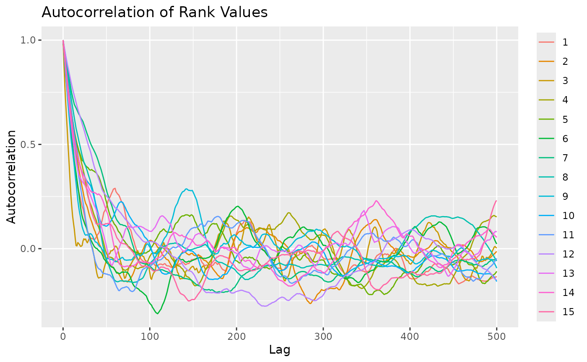
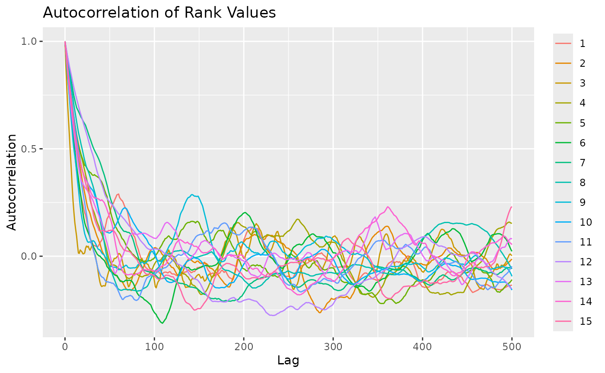

Generate random samples from the Mallows Rank Model (Mallows 1957) with consensus ranking \(\rho\) and scale parameter \(\alpha\). The samples are obtained by running the Metropolis-Hastings algorithm described in Appendix C of Vitelli et al. (2018) .
Arguments
- rho0
Vector specifying the latent consensus ranking in the Mallows rank model.
- alpha0
Scalar specifying the scale parameter in the Mallows rank model.
- n_samples
Integer specifying the number of random samples to generate. When
diagnostic = TRUE, this number must be larger than 1.- leap_size
Integer specifying the step size of the leap-and-shift proposal distribution.
- metric
Character string specifying the distance measure to use. Available options are
"footrule"(default),"spearman","cayley","hamming","kendall", and"ulam". See also thermmfunction in thePerMallowspackage (Irurozki et al. 2016) for sampling from the Mallows model with Cayley, Hamming, Kendall, and Ulam distances.- diagnostic
Logical specifying whether to output convergence diagnostics. If
TRUE, a diagnostic plot is printed, together with the returned samples.- burnin
Integer specifying the number of iterations to discard as burn-in. Defaults to 1000 when
diagnostic = FALSE, else to 0.- thinning
Integer specifying the number of MCMC iterations to perform between each time a random rank vector is sampled. Defaults to 1000 when
diagnostic = FALSE, else to 1.- items_to_plot
Integer vector used if
diagnostic = TRUE, in order to specify the items to plot in the diagnostic output. If not provided, 5 items are picked at random.- max_lag
Integer specifying the maximum lag to use in the computation of autocorrelation. Defaults to 1000L. This argument is passed to
stats::acf. Only used whendiagnostic = TRUE.
References
Irurozki E, Calvo B, Lozano JA (2016).
“PerMallows: An R Package for Mallows and Generalized Mallows Models.”
Journal of Statistical Software, 71(12), 1–30.
doi:10.18637/jss.v071.i12
.
Mallows CL (1957).
“Non-Null Ranking Models. I.”
Biometrika, 44(1/2), 114–130.
Vitelli V, Sørensen, Crispino M, Arjas E, Frigessi A (2018).
“Probabilistic Preference Learning with the Mallows Rank Model.”
Journal of Machine Learning Research, 18(1), 1–49.
https://jmlr.org/papers/v18/15-481.html.
See also
Other rank functions:
compute_expected_distance(),
compute_observation_frequency(),
compute_rank_distance(),
create_ranking(),
get_mallows_loglik()
Examples
# Sample 100 random rankings from a Mallows distribution with footrule distance
set.seed(1)
# Number of items
n_items <- 15
# Set the consensus ranking
rho0 <- seq(from = 1, to = n_items, by = 1)
# Set the scale
alpha0 <- 10
# Number of samples
n_samples <- 100
# We first do a diagnostic run, to find the thinning and burnin to use
# We set n_samples to 1000, in order to run 1000 diagnostic iterations.
test <- sample_mallows(rho0 = rho0, alpha0 = alpha0, diagnostic = TRUE,
n_samples = 1000, burnin = 1, thinning = 1)
#> Items not provided by user. Picking 5 at random.
 #> [1] "Press [enter] to see the next plot"
#> [1] "Press [enter] to see the next plot"
 # When items_to_plot is not set, 5 items are picked at random. We can change this.
# We can also reduce the number of lags computed in the autocorrelation plots
test <- sample_mallows(rho0 = rho0, alpha0 = alpha0, diagnostic = TRUE,
n_samples = 1000, burnin = 1, thinning = 1,
items_to_plot = c(1:3, 10, 15), max_lag = 500)

#> [1] "Press [enter] to see the next plot"
# From the autocorrelation plot, it looks like we should use
# a thinning of at least 200. We set thinning = 1000 to be safe,
# since the algorithm in any case is fast. The Markov Chain
# seems to mix quickly, but we set the burnin to 1000 to be safe.
# We now run sample_mallows again, to get the 100 samples we want:
samples <- sample_mallows(rho0 = rho0, alpha0 = alpha0, n_samples = 100,
burnin = 1000, thinning = 1000)
# The samples matrix now contains 100 rows with rankings of 15 items.
# A good diagnostic, in order to confirm that burnin and thinning are set high
# enough, is to run compute_mallows on the samples
model_fit <- compute_mallows(
setup_rank_data(samples),
compute_options = set_compute_options(nmc = 10000))
# The highest posterior density interval covers alpha0 = 10.
burnin(model_fit) <- 2000
compute_posterior_intervals(model_fit, parameter = "alpha")
#> parameter mean median hpdi central_interval
#> 1 alpha 9.840 9.838 [9.330,10.360] [9.338,10.373]
# When items_to_plot is not set, 5 items are picked at random. We can change this.
# We can also reduce the number of lags computed in the autocorrelation plots
test <- sample_mallows(rho0 = rho0, alpha0 = alpha0, diagnostic = TRUE,
n_samples = 1000, burnin = 1, thinning = 1,
items_to_plot = c(1:3, 10, 15), max_lag = 500)

#> [1] "Press [enter] to see the next plot"
# From the autocorrelation plot, it looks like we should use
# a thinning of at least 200. We set thinning = 1000 to be safe,
# since the algorithm in any case is fast. The Markov Chain
# seems to mix quickly, but we set the burnin to 1000 to be safe.
# We now run sample_mallows again, to get the 100 samples we want:
samples <- sample_mallows(rho0 = rho0, alpha0 = alpha0, n_samples = 100,
burnin = 1000, thinning = 1000)
# The samples matrix now contains 100 rows with rankings of 15 items.
# A good diagnostic, in order to confirm that burnin and thinning are set high
# enough, is to run compute_mallows on the samples
model_fit <- compute_mallows(
setup_rank_data(samples),
compute_options = set_compute_options(nmc = 10000))
# The highest posterior density interval covers alpha0 = 10.
burnin(model_fit) <- 2000
compute_posterior_intervals(model_fit, parameter = "alpha")
#> parameter mean median hpdi central_interval
#> 1 alpha 9.840 9.838 [9.330,10.360] [9.338,10.373]